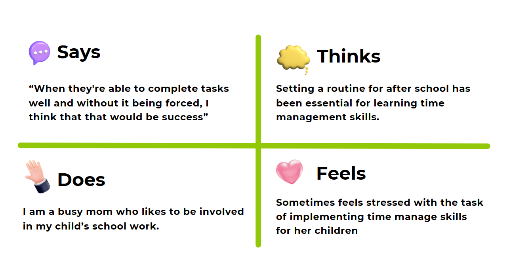
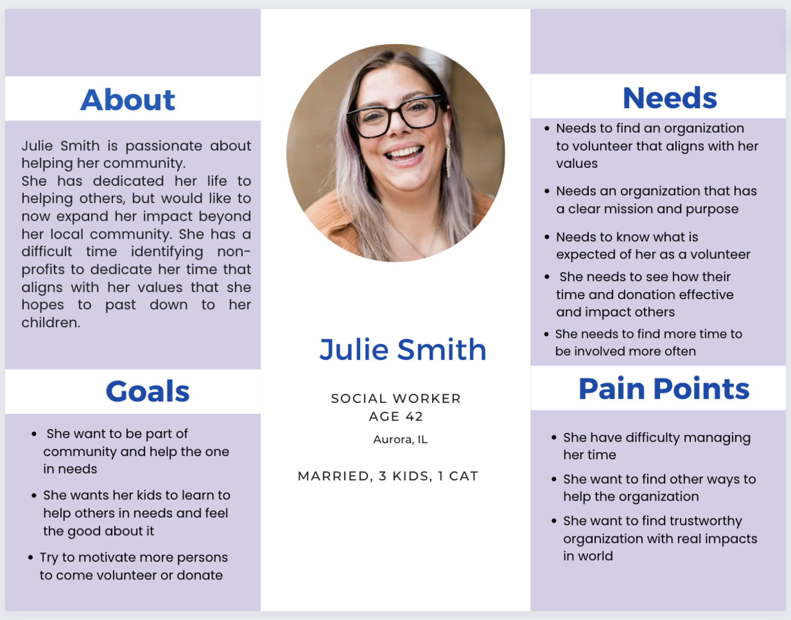
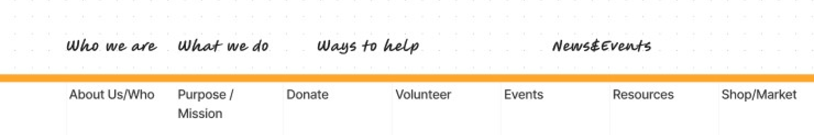
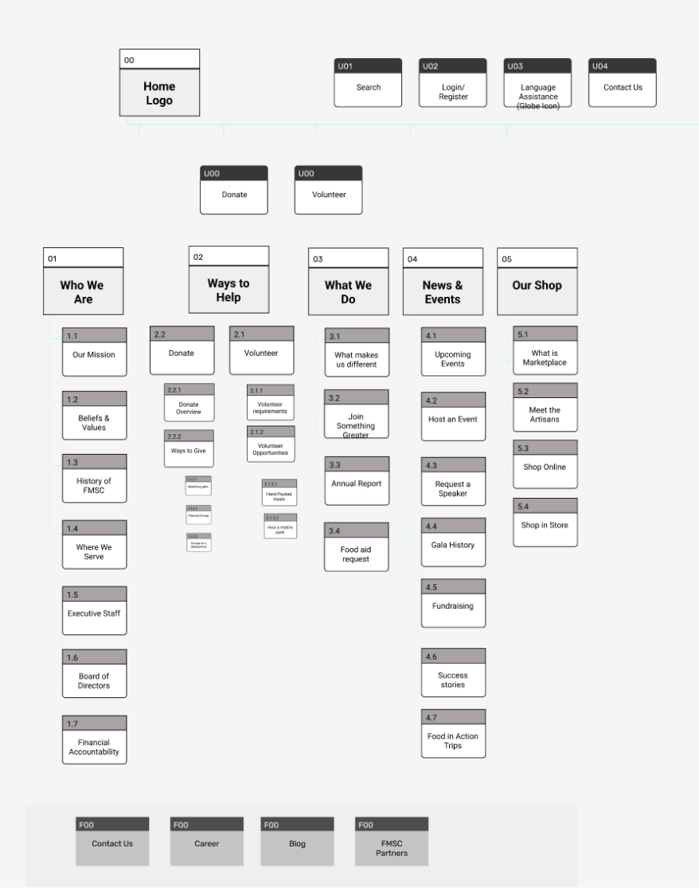
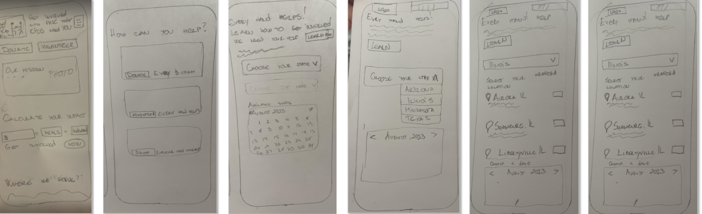
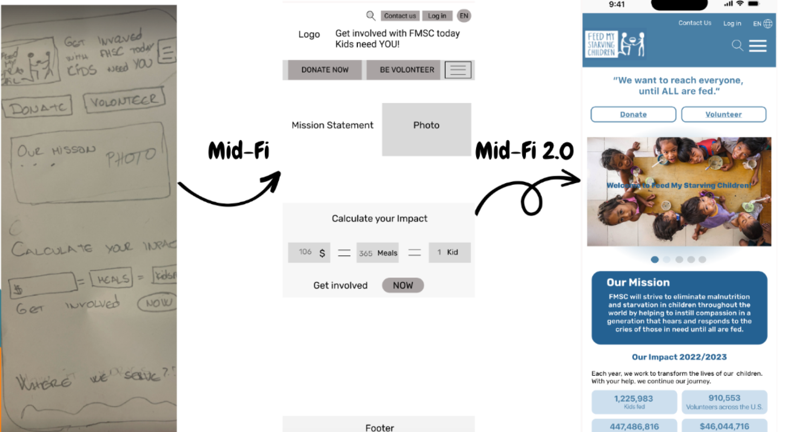

Building Habits...One HOP at a Time
Project OVERVIEW
Helping parents and their children to build good habits step by step.
The Problem
When faced with procrastination-related homework situations, children experience anxiety due to looming deadlines, while parents feel the added stress of juggling yet another responsibility.
Proposed Solution
We propose developing a tool that breaks down tasks into manageable daily chunks and incorporates a rewarding system to motivate task completion.
Task
We aim to create a user-centric tool that not only reduces stress for both parents and kids, but also cultivates a sense of accomplishment, contributing to a happier and more balanced family life.
Roles
Group members: Joliot Palmes, Zorka Pretrova, Jimena Olivares, Dora Montes I served as a UX/UI designer, working both- providing support to my group in crating research plan,also individually by doing user interviews, analyzing data, prototyping, UI design in Figma and validation.
Project specifications
Duration: 3 weeks
Tools:
Research
We start our project with making good Reserch plan and organization depending of the timeframe we was given, thats way we skip the qwantitative method and we went with qwantitative research with 1:1 interview so we can gatter dipper and better insides from the users.
We conducted 6 interviews.
Interviewees were all parents of children aged 6 to 12 years old. Based on our questions, we succeeded in gathering a lot of deeper insights and data to use for our future steps. I wish we had more time to conduct additional interviews, not only with parents but also with children, to observe how the insights of the parents align with those of the children.
Prioritization Matrix
We alalize all the data making the Affinity Diagram, it was many good answers, varairy of prespectives, it was intresting to see how parents can be diffrent or similar in some areas. We was devoted to try find the best way to help our users to solve their paint points and hilight the positive
We wrap it up all the data and depents of the information we getter we create Empaty map
DEFINE
We synthesized data from the reserch an we come to come conclusions
Competitor Analysis
I like to conduct research on competitors to gain a better understanding of what users prefer or find confusing. This helps me identify the pros and cons, guiding my future development ideas.
DIRECT COMPETITORS
- Connects teachers with students and parents to build classroom communities
-Sharing class photos and videos between parents, teachers, and students on a smartphone or any desktop computer.
- Psychological impact of public displays of student success on sensitive students.
Negative Dojo points can be humiliating and counter productive.
Classrooms work with Google Docs, Sheets, Slides, Sites, Earth, Calendar, and Gmail, and can be supplemented by Google Hangouts or Meet for face-to-face live teaching or questions
There are no automated updates. Learners need to refresh regularly in order to make sure to notice important announcements.
- Notifications and reminders are helpful
- Users can store homework, assignments, reminders, and revision tasks in the cloud, accessible anywhere
- More toward junior to high school and college students
- No reward system
- Parents cannot view the app
InDIRECT COMPETITORS
- Makes time management fun and relatable for kids to feel motivated
- Helps children with with ADHD, ASD, ODD, General Anxiety, or Depression to focus and complete their daily tasks while learning basic responsibility and independence
- There's only an app and no website
- Is not free
- The user has the freedom to choose his activities and to choose his avatar
- You can connect with others
- Is for bigger kids, the parent doesn't have too much control over kids
- Too complicated and hard to follow In Habitica
Users Persona
After synthesizing our data, we developed an Empathy Map, which served as the foundation for creating our User Persona. Allow us to introduce Jolie Smith, along with her Pain Points, Needs, and Goals."
User Journey Map
UX Scenario
Julie is eager to expand her impact in the community by finding an organization she can trust, where she can witness the tangible effects of her contributions. She hopes to bring her children along as often as possible. Julie has recently heard about Feed My Starving Children and is attempting to get in touch with the organization to explore ways she can contribute. She visits the organization's website and begins reading the Mission and Impact statements to gain an understanding of their work and to explore opportunities for involvement
Goals:
Julie is seeking a nonprofit that aligns with her goal of not only engaging in community involvement but also showing her children the gratification of helping those in need.

Define Problem
During the research interviews, we discovered that our users are passionate about volunteering but have a difficult time identifying non-profits to dedicate their time to that align with their values. Given their limited time, they would benefit from finding an organization that displays a clear mission statement describing what the organization does, who the organization helps, and what difference it makes in the community. How might we help make it easier for them to decide to help and make a long-term commitment
Solution
We might be able to make it easier for people who want to volunteer or donate to focus on “Feed My Starving Children” by redesigning their website so that people can easily navigate it and find the information they need in order to choose the activities that they want to volunteer for or donate in a more permanent basis. By doing this, “Feed My Starving Children” will attract more people to its website increasing their volunteers and donors.
How our Research Highlighted the decision we made
Based on our understanding of our users, our group's target was to identify the required features.
We aimed to ensure that our users can easily find:
Site Map
After conducting five user card sorting sessions, we used the insights gathered to design the sitemap for the feature redesign. An interesting aspect of this process was our decision to rename the main feature categories to make them more approachable and provide clearer titles.
 Prototyping
Wireframes sketches (Low Fidelity)
 Testing and Iterating
Usability Testing Plan & Notes

The "Welcome to FMSC" message on the front page is somewhat challenging to perceive or read. The volunteer application- user scrolled down the application and noticed the progress bar and really enjoyed that”

The user selected two dates on the "select a date" screen instead of just one,but he successfully completed the sign-up process.

The user genuinely like the design and color choices. He particularly enjoyed the clear separation of sections and the abundance of pictures incorporated into the design.

,, Hierarchy could be added in the home screen to certain sections. Heading on picture on homescreen was hard to read and too small”

"She really likes the hamburger menu, but she prefers it to have a slower interaction, and she's glad it doesn't cover the entire page."
Objectives
Key learnings
- Clarification of the workflow navigation for consistency across applications.
- Increased font size where applicable to enhance readability
- Addition of new functionality in several screens based on user input.
- A change in the color scheme to incorporate more vibrant and inviting colors
The testers achieved an excellent success rate, with all reaching the testing goals at 100%.
We received a substantial amount of feedback, which we analyzed and prioritized
for
implementation. Some items were left in the backlog for future iterations.
Notable
implementations include:
Final Thoughts / Conclusion
The Journey
The past few weeks have been both exciting and intense. Our group performed exceptionally well, and our collaborative experience was a true joy.
Our Project
Time seemed to fly by, and the Feed My Starving Children website redesign has been an invaluable learning experience. We've honed our design skills and become more proficient with tools, especially Figma. As it's often the case, we feel that more time would have allowed us to fully realize our vision. Nevertheless, we're content with what we've accomplished in a relatively short span, and we're grateful for the opportunity to collaborate with such a remarkable group of classmates. While we wish we could have conducted further iterations to enhance our prototypes, we understand that this work is ongoing, and we're satisfied with where they stand today.
Future developments
- Fully develop the other ways to give ( Donate and FMSC shop)
- Conduct more research and user testing
- Explore the possibility of interviewing FMSC executive staff (we made an attempt)
- Distribute a qualitative survey to gain additional insights.
AHA Moments
We recognize the importance of finalizing our color scheme and typography choices earlier in the process.
What’s next?
Our journey of learning continues, and we're excited about the future. It can only get better!